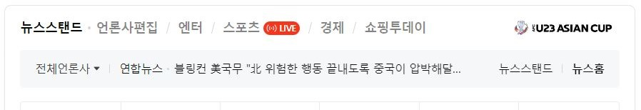

실습예제04_내용 추가 메서드를 활용한 실시간 검색순위
1. 실시간 검색 순위 구현하기
// 시간 객체
// 1. setInterval(함수명, 반복할시간); 일정시간 마다 함수나 내용을 반복호출하여 실행
// 일정시간 지난 후 함수를 호출하여 한 번 내용실행
// 2. setTimeout(내용, 반복할시간); 일정시간 지난 후 함수를 호출하여 한 번 내용실행
setInterval(function(){
// console.log('내용 반복 출력'); // 테스트
// 변수선언
let boxIn = $('.boxIn ul'); //목록태그의 부모요소
let boxRow = $('.boxIn ul li:first'); //첫번째 li 요소를 변수에 저장
let ARea = ()=>{
boxRow.appendTo(boxIn).show(300); //첫째 li 태그를 ul태그의 마지막요소에 자리배치(위치변경)
}
boxRow.hide(300, ARea); //boxRow 요소가 숨겨지고나면 ARea에 저장된 콜백함수가 실행됨
},3000);
2. 네이버 뉴스 스탠드 구현하기

setInterval(function(){
let newsIn = $('.newsIn ul');
let newsA = $('.newsIn ul li:first');
let nn = function(){
newsA.appendTo(newsIn).show(200);
}
newsA.hide(200, nn);
},2000);